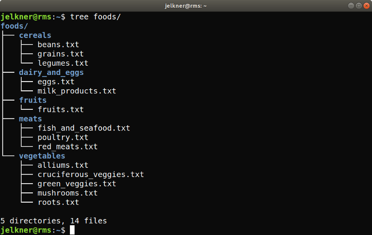

rm, cp, and mvWe know how create directories in the file system tree, change the location of the current directory within that tree, and create and edit text files. Now we will learn a few Unix commands to manage and maintain our text files.
The following unix commands can be used to remove (delete), copy, and move or rename a file.
file_name]file_name.
original_file_name] [new_file_name]original_file_name to
new_file_name.original_file_name] [new_file_name]original_file_name to
new_file_name.rm Command
The rm works much like the rmdir command, only it
takes a file instead of a directory as an argument.
cp Command
The cp command behaves differently depending on whether its second
argument is a file or a directory. For example, given a directory,
dir, with subdirectory, subdir and containing the
text file, file.txt:
dir ├── file.txt └── subdir
The command:
$ cp file.txt newfile.txt
run inside the dir directory will create a
newfile.txt in the directory.
dir ├── file.txt ├── newfile.txt └── subdir
while the command:
$ cp file.txt subdir
will create a copy of file.txt with the same name in the
subdir directory.
dir
├── file.txt
└── subdir
└── file.txt
mv Command
The mv command is used to change the location of a file or
directory as well as to change the name of a file or directory without changing
its location.
Assume the current working directory is named dir, and that it
contains two subdirectories and a text file as follows:
dir ├── file.txt ├── subdir1 └── subdir2
Running:
$ mv file.txt renamed.txt
from within the dir directory results in a new name for
file.txt in the same location:
dir ├── renamed.txt ├── subdir1 └── subdir2
while:
$ mv renamed.txt subdir1
results in a new location for renamed.txt without changing its
name:
dir ├── subdir1 │ └── renamed.txt └── subdir2
In the exercises you will see how to change name and location at the same time.
rm -rf
The approach we have taken so far to managing directories and files can be
likened to leaves growing out of the ends of a branch (mkdir) and
being pruned one at a time at the tip (rmdir and rm).
Now we look at a way to hack off entire sections of our file system tree with
a machete.
We have already seen an example of a command argument (also called
a command flag, command option, or command switch) with
the ls -l command. Starting with the following directory
structure:
dir2 ├── sub1 ├── sub2 │ ├── subsub1 │ │ └── subsubsub1 │ │ └── file2.txt │ └── subsub2 │ └── file1.txt └── sub3
Running the following command from within the dir2 directory:
$ rm -rf sub2
results in:
dir2 ├── sub1 └── sub3
Pruning
the file system tree at sub2 and removing it and
all the directories and files inside it and their decedents.
Assuming you have the word.txt file you created in the
previous lesson, type the following at the unix
command prompt:
$ cp word.txt word2.txt
Use the ls command to verify that you now have both
word.txt and word2.txt. Use ls -l
see that they are the same size. Edit word2.txt to see that
it has the same content as word.txt. Now run:
$ rm word.txt
Again list the files in your current working directory with ls
to confirm that word.txt has been deleted (removed).
Finally, use the mv command to change the name of the file
back to word.txt
The following image shows a directory tree related to foods and food groups.
After being told to create this directory, your assistant tried, but made numerous mistakes. Download foods.tgz and run the following command at your bash prompt in the same directory with the file:
$ tar xzvf foods.tgz
This will create a directory tree that looks like this:
foods/
├── cereals
│ ├── beans.txt
│ └── legumes.txt
├── cheetos.txt
├── dairy_and_eggs
│ └── eggos.txt
├── fruits
│ ├── fish_and_seafood.txt
│ ├── fruits.txt
│ ├── mil_prodcts.txt
│ └── skittles.txt
├── grains.txt
└── meats
├── poultry.txt
├── red_meats.txt
└── vegetables
├── alliums.txt
├── cruciferous_veggies.txt
├── green_veggies.txt
├── mushrooms.txt
└── roots.txt
Your job is to fix all the mistakes your assistant made and put the foods directory into the form shown in the screenshot.